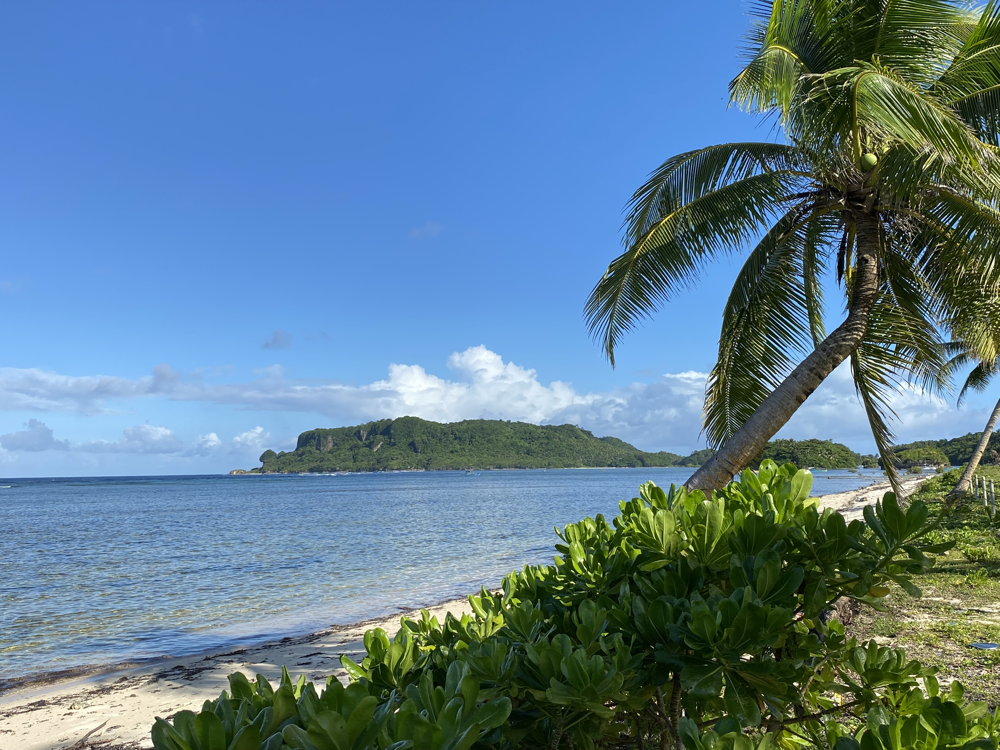

Discover Sapao Wonders
Experience the coastlines, cultural heritage, and warm hospitality of Barangay Sapao.
Explore Sapao
Visit with purpose
Follow the local trails, enjoy the sea breeze, and learn the stories behind each destination in Sapao.
Where to go in Sapao
Coca Beach
Coca Beach offers a quiet coastal escape with open-air cottages, a peaceful shore, and easy access for families and small groups. Cottage rentals range from ₱500 to ₱1,000, while day-use access is only ₱10.
See more →Dumpao Beach
Dumpao Beach is a calm seaside destination shaped by resilience and local history. Its wide shoreline, simple cottages, and strong community identity make it an inviting place for a relaxing visit.
See more →PAGASA-DOST
The PAGASA-DOST weather station in Sapao is an important regional facility, helping monitor weather and support disaster preparedness for the community and nearby areas.
See more →Sta. Cruz Parish
Sta. Cruz Parish is the spiritual heart of the barangay, known for its active community life, regular masses, and annual fiesta that brings families together every year.
See more →Plan your visit
From Guiuan town proper, Sapao is a short ride away and makes an easy day trip for travelers who want to experience the coast and the local culture of Eastern Samar.